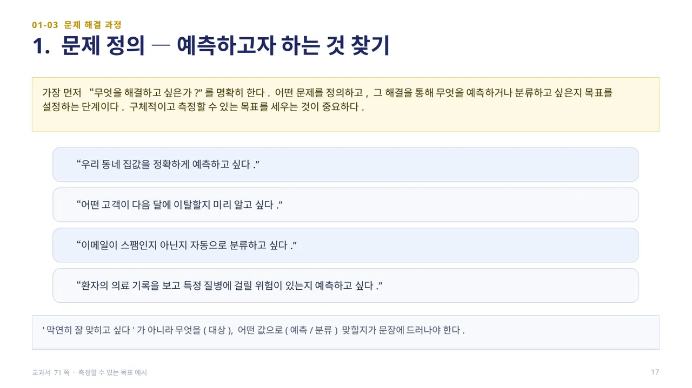
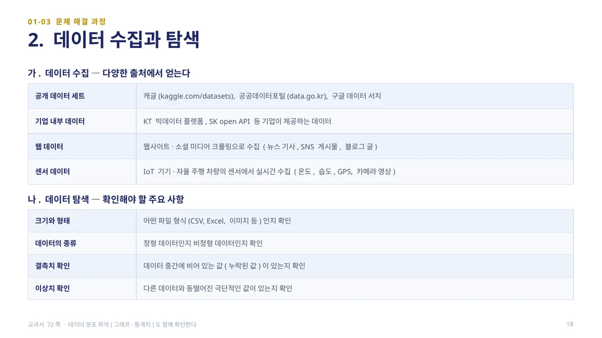
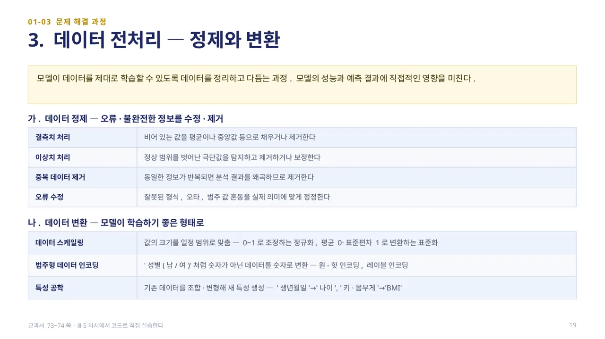
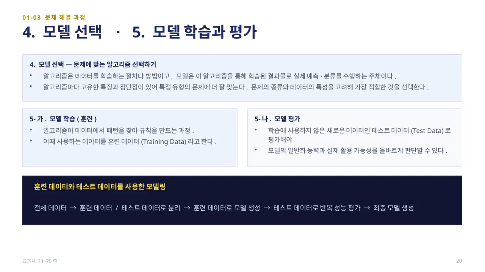
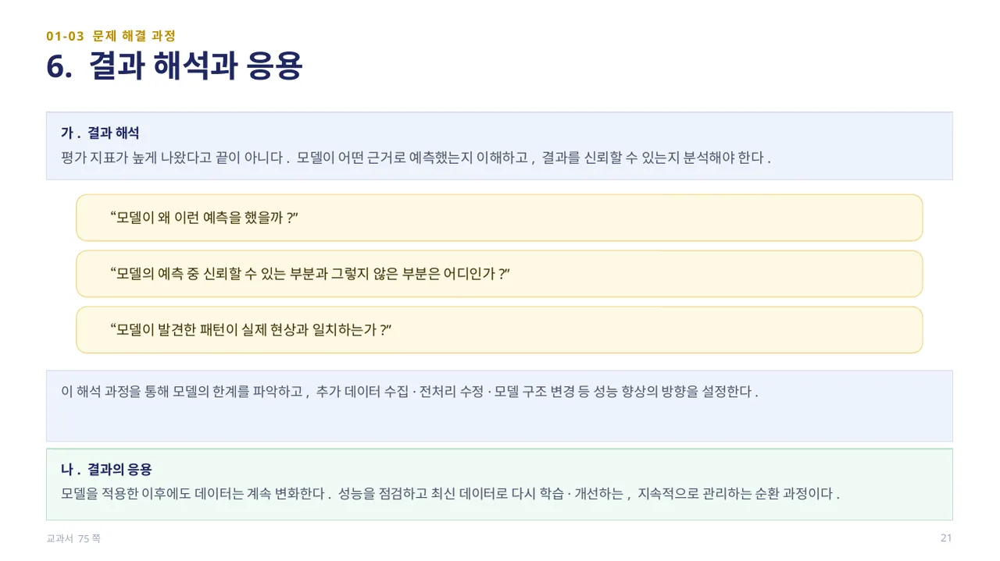
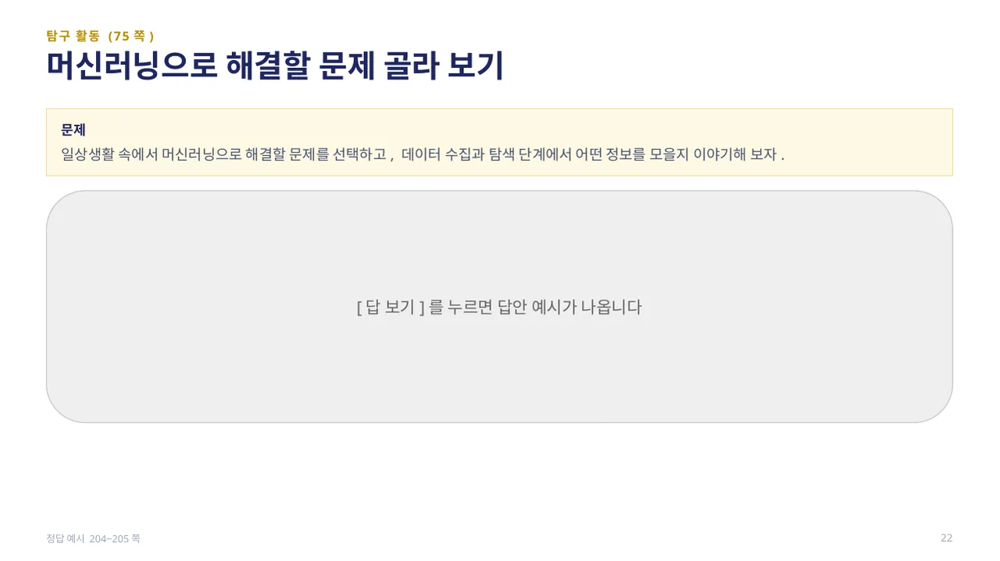
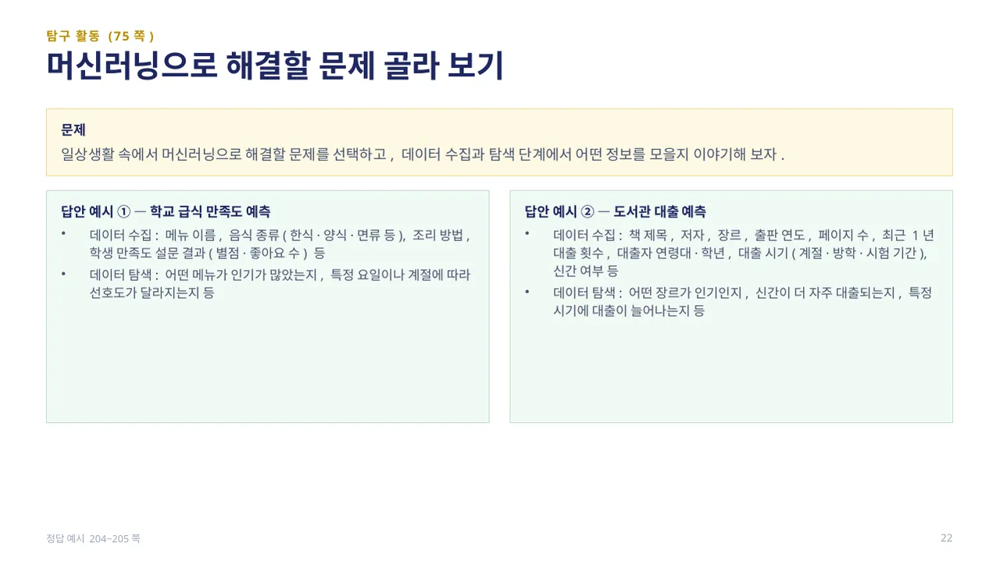

단순히 데이터를 컴퓨터에 넣는다고 모든 문제가 저절로 해결되는 것은 아닙니다. 머신러닝은 ①문제 정의 → ②데이터 수집과 탐색 → ③데이터 전처리 → ④모델 선택 → ⑤모델 학습과 평가 → ⑥결과 해석과 응용의 여섯 단계를 체계적으로 거칩니다.
이 6단계가 곧 수행② (모델 구현·평가 미니 프로젝트)의 진행 순서이자 채점 흐름이 됩니다. 순서를 정확히 외워 두면 확인 학습에서 전처리 과정의 순서를 묻는 문항에도 바로 답할 수 있습니다. (교과서 71쪽)

문제 해결의 첫 단계는 “무엇을 해결하고 싶은가?”를 명확히 하는 것입니다. 어떤 문제를 정의하고, 그 해결을 통해 무엇을 예측하거나 분류하고 싶은지 구체적이고 측정할 수 있는 목표를 세우는 것이 중요합니다.
예를 들어 “우리 동네 집값을 정확하게 예측하고 싶다”, “어떤 고객이 다음 달에 이탈할지 미리 알고 싶다”, “이메일이 스팸인지 아닌지 자동으로 분류하고 싶다”처럼, 막연히 ‘잘 맞히고 싶다’가 아니라 무엇을(대상), 어떤 값으로(예측/분류) 맞힐지가 문장에 드러나야 합니다. (교과서 71쪽)

데이터는 캐글(kaggle.com/datasets)·공공데이터포털(data.go.kr) 같은 공개 데이터 세트, 기업이 제공하는 내부 데이터, 웹사이트·소셜 미디어를 크롤링한 웹 데이터, IoT 기기·센서에서 수집한 데이터 등 다양한 출처에서 얻을 수 있습니다.
수집한 뒤에는 데이터를 탐색해야 합니다. 어떤 파일 형식(CSV, Excel, 이미지 등)인지, 정형 데이터인지 비정형 데이터인지, 결측치(비어 있는 값)나 이상치(다른 데이터와 동떨어진 극단적인 값)가 있는지를 확인합니다. 여기서 발견한 문제점이 다음 단계인 전처리와 모델 선택에 큰 영향을 미칩니다. (교과서 72쪽)

데이터 전처리는 모델이 데이터를 제대로 학습할 수 있도록 정리하고 다듬는 과정으로, 모델의 성능과 예측 결과에 직접적인 영향을 미칩니다. 데이터 정제는 결측치를 평균·중앙값 등으로 채우거나 제거하고, 이상치를 탐지해 제거·보정하며, 중복 데이터를 제거하고 오류를 정정하는 과정입니다.
데이터 변환은 모델이 학습하기 좋은 형태로 바꾸는 과정입니다. 값의 크기를 일정 범위로 맞추는 스케일링(0~1로 조정하는 정규화, 평균 0·표준편차 1로 바꾸는 표준화), 숫자가 아닌 범주형 데이터를 숫자로 바꾸는 인코딩(원-핫 인코딩, 레이블 인코딩), 기존 데이터를 조합해 새 특성을 만드는 특성 공학(예: ‘생년월일’→‘나이’, ‘키·몸무게’→‘BMI’)이 대표적입니다. (교과서 73~74쪽, Ⅲ-5차시에서 코드로 직접 실습합니다)

모델 선택은 문제에 맞는 알고리즘을 고르는 단계입니다. 알고리즘은 데이터를 학습하는 절차나 방법이고, 모델은 이 알고리즘을 통해 학습된 결과물로 실제 예측·분류를 수행하는 주체입니다. 알고리즘마다 고유한 특징과 장단점이 있어 문제의 종류와 데이터의 특성을 고려해 가장 적합한 것을 골라야 합니다.
모델 학습은 알고리즘이 데이터에서 패턴을 찾아 규칙을 만드는 과정이며, 이때 사용하는 데이터를 훈련 데이터(Training Data)라고 합니다. 모델 평가는 학습에 사용하지 않은 새로운 데이터인 테스트 데이터(Test Data)로 평가해야 모델의 일반화 능력과 실제 활용 가능성을 올바르게 판단할 수 있습니다. 흐름은 전체 데이터 → 훈련/테스트 분리 → 훈련 데이터로 모델 생성 → 테스트 데이터로 반복 평가 → 최종 모델 생성입니다. (교과서 74~75쪽)

평가 지표가 높게 나왔다고 끝이 아닙니다. 모델이 어떤 근거로 예측했는지 이해하고 결과를 신뢰할 수 있는지 분석해야 합니다. “모델이 왜 이런 예측을 했을까?”, “모델의 예측 중 신뢰할 수 있는 부분과 그렇지 않은 부분은 어디인가?”, “모델이 발견한 패턴이 실제 현상과 일치하는가?”를 스스로 물으며 모델의 한계를 파악하고, 추가 데이터 수집·전처리 수정·모델 구조 변경 같은 개선 방향을 설정합니다.
모델을 적용한 이후에도 데이터는 계속 변화합니다. 성능을 점검하고 최신 데이터로 다시 학습·개선하는 것은 지속적으로 관리하는 순환 과정입니다. (교과서 75쪽)

탐구 활동(75쪽): 일상생활 속에서 머신러닝으로 해결할 문제를 선택하고, 데이터 수집과 탐색 단계에서 어떤 정보를 모을지 이야기해 봅니다.
답 보기답 숨기기

답안 예시 — 학교 급식 만족도 예측: 메뉴 이름·음식 종류·조리 방법·학생 만족도 설문 결과를 수집하고, 어떤 메뉴가 인기 있었는지·요일이나 계절에 따라 선호도가 달라지는지 탐색합니다. 도서관 대출 예측: 책 제목·저자·장르·최근 1년 대출 횟수·대출자 연령대·대출 시기를 수집하고, 어떤 장르가 인기인지·신간이 더 자주 대출되는지 탐색합니다. 여기서 고른 문제는 수행②의 주제 후보로 메모해 둡니다. (정답 예시 204~205쪽)
 인공지능 파이썬 실무
인공지능 파이썬 실무